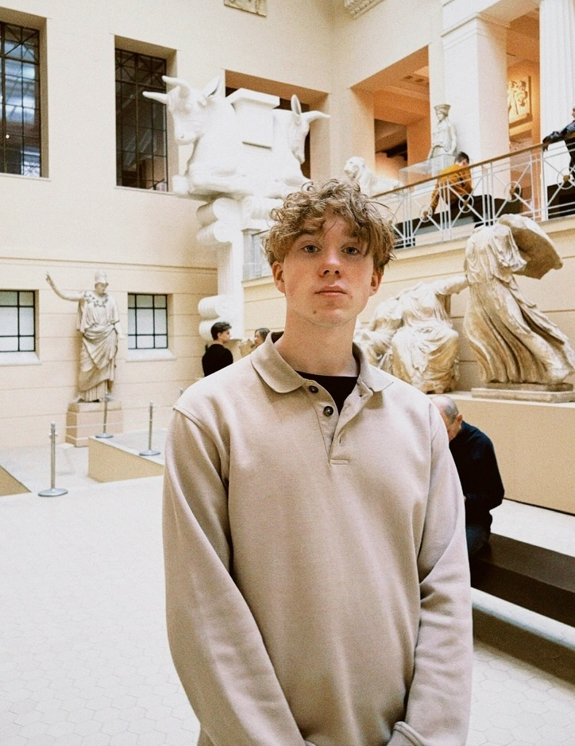

Подходит для упоминания в дизайн-подборках, комьюнити, галереях лучших кейсов или продуктовых обзорах.
Product designer
Тимур Глухов
3+ года опыта. Работал в финтех B2B продукте, разрабатывал e-commerce продукт и проектировал цифровые сценарии, где важны ясная структура, аккуратный UI и удобство для пользователя.

Основной акцент здесь на проектах и том, как дизайн решает задачу.
01
02
03
Silkway / B2C mobile app
Пересобрал UI-кит и переосмыслил профиль пользователя в мобильном продукте.
Кейс про системный дизайн, консистентность интерфейса и редизайн личного кабинета с акцентом на понятные сценарии и продуктовую логику.
Lawber / P2P mobile app
Спроектировал сервис, который помогает быстро назначить адвоката на судебное заседание.
Кейс про user flow, прозрачный процесс назначения адвоката и понятный клиентский путь с акцентом на доверие и контроль над статусами дела.
TAXI TROIKA / B2C mobile app
Пересобрал водительское приложение, упростив принятие заказов и сценарий поездки.
Кейс про быстрые сценарии для водителей, работу с картой, прозрачные статусы поездки и снижение времени реакции на заказ в реальных условиях движения.
Упоминания
01
Дизайн батл Perasperadastra
02
Место под подборку
03
Место под интервью
Участие в проекте дизайн школы.
Здесь можно разместить интервью, разбор кейса, гостевой материал или другой формат внешнего упоминания.